Irei aqui postar tutoriais, detonados, segredos, explicações, etc... sobre diversos games.
Se o seu game não está relacionado aqui, nos mande um recado!
A História
Antes de tudo o que conhecemos, antes da civilização humana formar-se de modo definitivo no universo,
tudo era mantido em ordem por dois elementos da natureza: criação e extinção.
Tais elementos eram protegidos por dois deuses, que eram os mais respeitados e confiados entre todos.
Por acreditarem que a raça humana era ignorante em demasia para desenvolver uma civilização com as próprias mãos,
foram enviados por eles Deva e Asura, que garantiriam os primeiros passos de nossa civilização.
Deva representava a luz, Asura, a escuridão. Após os já aguardados altos e baixos, Gaia — a raça humana — se estabeleceu.
O que não se esperava era que uma mulher, que se denominava “A Bruxa”,
atacasse os filhos de Gaia, tirando-os do equilíbrio espiritual e material em que viviam até então.
Ela afirmava categoricamente que a história de Gaia havia sido distorcida e muitas pessoas a seguiram como fanáticos.
Isso pôs Gaia novamente sob os auspícios do caos. Após anos de guerra, em que Gaia, Deva e Asura,
precisaram unir-se novamente para conseguir derrotar a Bruxa, finalmente ela foi capturada e queimada viva.
Anos depois, correm suspeitas de que os seguidores da Bruxa estão crescendo novamente.
Algumas pessoas entre os filhos de Gaia começam a ponderar se as palavras da mulher não estavam certas.
Raças e Classes
Rappelz possui três raças diferentes onde cada uma pode evoluir para 9 tipos classes.
De acordo com a escolha da raça e da classe, a árvore de habilidades muda, tornando o jogo ainda mais divertido!
Atributos
Os atributos dos personagens podem ser vistos acionando no jogo a aba de Informações Básicas (Alt+C).
Abaixo os principais atributos:
Força: Aumenta o poder de ataque físico, e a capacidade de carga
Vitalidade: Aumenta sua barra de vida e Defesa Física
Destreza: Aumenta a precisão Física para todos os personagens e também de ataque para jogadores que usarem arcos
Agilidade: Aumenta a esquiva
Inteligência: Aumenta a barra de magia e poder de ataque mágico
Sabedoria: Aumenta a precisão, defesa e Resistência Mágica
Sorte: Aumenta a taxa de críticos
Comandos
Botão esquerdo do mouse: movimenta o personagem; conversar; atacar; selecionar; pegar itens.
Botão direito do mouse: muda o modo de visão do personagem.
Scroll do mouse: altera a distância em que é visto o personagem.
Teclas Alt+S: abre a janela de habilidades do personagem.
Teclas Alt+M: mostra o mapa do lugar onde você está.
Teclas Alt+O: abre a tela de opções.
Teclas Alt+P: abre a tela de grupos.
Teclas Alt+Q: abre a tela de missões.
Teclas Alt+R: mostra informações sobre a criatura.
Teclas Alt+F: envia mensagens.
Teclas Alt+T: abre a tela de controles.
Teclas Alt+Z: abre a tela do sistema.
Teclas Alt+C: abre a tela de informações sobre o personagem.
Teclas Alt+I: abre o inventário do personagem.
Teclas F1-F12: atalho rápido para os "slots".
Teclas Ctrl+H: esconde o nome dos itens ou mostra a interface principal.
Teclas Ctrl+F: abre a tela de informações sobre o alvo.
Teclas Ctrl+Alt+F4: fecha o jogo e retorna para o Windows.
Tecla Print Screen: captura uma imagem da tela do jogo no momento em que a tecla foi pressionada, salvando a mesma junto aos arquivos do game.
Criaturas
Neste jogo, você poderá domesticar, invocar, treinar e evoluir criaturas colocando pontos nas seguintes habilidades:
- Controle de Criaturas: Indica o numero de criaturas que poderá ter
- Invocar Criatura: Invoca a criatura selecionada na janela de criaturas (ALT+Y)
- Convocar Criatura: Dissipa a sua criatura
- Doma de Criatura: Habilidade para tentar domesticar um monstro (necessário ter a carta vazia da criatura que deseja capturar)
- Domínio de Criaturas: Aumenta o ataque físico das suas criaturas.
- Montar: Funciona apenas com algumas criaturas específicas.
NOTA: São habilidades iniciais e para todas as classes.
Domando, Invocando e Equipando
Consiga uma carta de criatura vazia, através de uma das missões iniciais, comprando no mercador (onde vende as cartas básicas: Pantera, Tortus e Ave) ou do corpo de um monstro derrotado. Depois de pegar uma carta de criatura vazia, é hora de sair da cidade e começar a caça!
Para que sua caça seja bem sucedida, procure um monstro que seja da mesma linhagem da carta que esteja com você (uma Carta Ave funciona apenas com monstros tipo Ave, como os vários Crista e semelhantes) e use a habilidade Doma de Criatura. Vale lembrar que a vida do monstro tem que estar cheia. Verifique antes de tentar capturá-lo.
Depois que lançar a habilidade no monstro, ele vai começar a atacá-lo; lute com o monstro até que ele seja eliminado. Verifique em seu inventário se há uma carta cheia. Se ela desapareceu, a doma não foi bem sucedida. O processo deverá começar do zero.
Alterando o nome da criatura
Quando você captura uma criatura, ela vem com um nome aleatório. Você pode mudar este nome usando o item “Carta de Mudança de Nome de” que pode ser adquirido na loja com gPotato. Para remover a criatura, dê dois cliques na na carta que está nesta mesma janela.
Invocando
Para invocar uma criatura é necessário que a sua criatura esteja equipada, Aperte ALT+Y para abrir a opção “Formação de Criaturas”, agora arraste a carta da criatura no primeiro espaço vazio da janela e pronto! Sua criatura já está equipada. Agora com a sua criatura selecionada, use a habilidade “Invocar Criatura” e assim você a terá ao seu lado sempre, em uma batalha perto de você! Para guardar sua criatura use a habilidade “Convocar Criatura”.
Controlando e evoluindo
Uma criatura invocada irá automaticamente lhe seguir para onde quer que você vá, mas para que sejam acionadas as suas ações existem 3 comandos básicos, que podem ser encontrados na janela de ações (Alt+T). Abaixo o nome e o que cada comando faz:
“Ataque da Criatura”: A Criatura ataca sozinha (ou segure a tecla ALT e clique no inimigo)
“Ataque em Conjunto”: Você e a criatura atacam juntos (ou segure a tecla CTRL e clique no inimigo).
“Seguir”: Sua criatura ira segui-lo (ou aperte ESC três vezes).
Além dos personagens de cada jogador, as criaturas também evoluem, separadamente.
Primeiro Nível de evolução: 50
Segundo Nível de evolução: 100
Para evoluir é fácil; basta evoluir a sua criatura ate os níveis citados acima e falar com o NPC Criador ou Invocador (dependendo da cidade o NPC vai ter um dos dois nomes) e escolher a opção “Evolução de Criatura”.
Quando as criaturas são evoluídas, além da mudança na aparência, elas ganham novas abas de habilidades ficando após a primeira evolução: Básica (que acompanha a criatura desde quando é capturada pelo jogador) e Intermediária. Evoluindo pela segunda vez mais habilidades serão adicionadas ficando 3 abas: Básica, Intermediária e Avançada.
Gerenciando
Se a sua criatura for derrotada por algum monstro, você poderá revivê-la com o mesmo item usado para reviver outros jogadores, este item se chama “Pergaminho da Ressurreição” que pode ser comprado com os mercadores das cidades.
Quando estiver com o item, invoque a sua criatura e use o “Pergaminho da Ressurreição”.
Caso você opte por ressuscitá-la no NPC (Criador ou Invocador), não precisará chamar a sua criatura, apenas clique na opção “Gerenciamento de Criatura” onde vai aparecer o nome de suas criaturas para você poder escolher qual será ressuscitada.
Equipando a sua criatura
Seus animais de estimação possuem duas espaços para o uso de equipamentos. Sendo um para arma e outro para armadura.
Os equipamentos usados para uma criatura são os mesmos utilizados pelos personagens, mas é necessário fazer uma combinação com a Carta de União, vendido no NPC Mercador. Todas as combinações de itens devem ser feitas na janela de Combinação, que pode ser acessado a partir de sua tela de inventário (ALT+I). Se em algum momento você desejar fazer o equipamento de Criatura voltar a ser utilizado por um jogador, você deve combiná-la com um Giz de Restauração. Este giz está disponível em NPC mercador qu...(line truncated)...
Vale lembrar que os equipamentos são válidos também de acordo com o nível da arma e com o nível da criatura.
OBS.: Criaturas para Locomoção
Para que você possa se locomover com mais agilidade pelo mundo de Rappelz, você poderá alugar por 6 horas uma “Criatura de Locomoção” conhecida como Ornito. São alugadas através do NPC “Guia de Aventura”, encontrado nas cidades, e quando sua validade expirar, você poderá alugá-la novamente. Para montá-la, clique duas vezes no ícone que representa a montaria, que fica em seu inventário (ALT+I) após o seu aluguel.
Armas & Armaduras
Melhorando o nível de armas e armaduras:
Rappelz possui uma grande variedade na evolução de seus equipamentos e existem diversas formas para evoluí-los. Basta estar equipado com o item que deseja aumentar o nível e falar com o NPC “Ferreiro”, encontrado em todas as cidades. Vale lembrar que a cada nível adicionado, aumentará também em 3 níveis o pré-requisito de seu equipamento. Por exemplo, uma arma de nível 50, para ser usada sem nenhuma evolução, possui também nível 50 de pré-requisito; mas caso você a evolua um nível no Ferreiro, seu...(line truncated)...
Grau
No NPC “Mercador de Armas”, você vai encontrar equipamentos até o Grau IV. O Grau de armas e armaduras que poderão ser usadas depende do seu nível:
- Equipamentos de Grau I: Podem ser usados por todos
- Equipamentos de Grau II: Podem ser usados pelos personagens de Nível 20 ou mais
- Equipamentos de Grau III: Podem ser usados pelos personagens de Nível 50 ou mais
- Equipamentos de Grau IV: Podem ser usados pelos personagens de Nível 80 ou mais
Pedras da Alma
Todos os equipamentos têm pelo menos dois encaixes disponíveis, com exceção de armas de duas mãos, que possuem 4 encaixes. Os itens utilizados nestes encaixes são chamados de Pedras da Alma.
Esses itens podem ser deixados por monstros, logo que eles sejam derrotados em uma batalha com jogadores. NPCs chamados Artesões da Alma, localizados em cada cidade principal, são os únicos com a capacidade de colocar esses itens em seus equipamentos. Basta clicar no NPC e selecionar a opção “Encaixes do Equipamento”, e uma janela irá aparecer onde você deverá colocar a arma que deseja encantar mais as pedras.
Essas pedras possuem uma grande variedade de atributos, desde um aumento em força, agilidade, vitalidade e destreza como aumento de precisão, acerto crítico e velocidade do personagem.
Fragmento
Fragmento é um item que aumenta o dano que um jogador pode causar a um inimigo. Os fragmentos, quando lançados em um inimigo, duram 10 segundos e o jogador poderá lançar quantos fragmentos quiser. Porém, eles não são cumulativos, e caso um novo fragmento seja usado com outro já em funcionamento, a contagem de 10 segundos recomeça.
Os fragmentos são divididos em três tipos:
Marcial: que são os fragmentos para adicionar mais danos a golpes físicos
Mágico: adiciona mais danos às magias lançadas
Luna: adiciona mais danos para as duas formas de ataque (porém ele é mais caro)
Fragmentos são graduados em Graus e o jogador vai utilizar um determinado grau dependendo do nível do inimigo; ou seja, quanto maior o nível do monstro, maior terá de ser o Grau de seu fragmento.
LAK
Lak é a energia mágica que os monstros possuem. Ocasionalmente, quando os monstros são derrotados, além de itens eles podem também liberar esta energia na forma de esferas roxas incandescentes e que,
quando criadas, vão diretamente para o jogador ou grupo que o derrotou.
Ou seja, esta energia não cai no chão ou é dissipada, ela sai do monstro e vai direto para os jogadores.
Esta energia é liberada dos monstros somente quando o jogador estiver com um Colar de Caos equipado, que o jogador pode conseguir através de uma das missões iniciais na Ilha de Treinamento ou comprando no NPC Mercador.
O Lak serve para você trocar por Rúpias (moeda do jogo) ou Fragmentos, no NPC chamado Comerciante de Lak que se encontra nas cidades principais do jogo.
Você poderá ver a quantidade de Lak que possui em seu inventário (ALT+I).
Vamos Bater Papo?
Através do chat você pode se comunicar com os jogadores próximos, em particular, com os membros do seu grupo e da sua guilda; ou seja, com toda a comunidade de jogadores online do mesmo servidor.
Você encontra cinco guias de bate-papo, que estes podem ser personalizadas de acordo com as suas necessidades:
• Todo
• Geral
• Grupo
• Guilda
• Com (Ad)
O botão [T] ao lado direito da barra de chat, serve para você minimizar as opções de chat, que ficam um pouco acima da barra de texto e quando minimizada as opções, vai dar prioridade à guia que foi por selecionada por último.
O botão [S] que fica ao lado esquerdo da caixa de diálogo é para configurar o seu chat; use-o para personalizar cada guia.
O tamanho da janela de bate-papo pode ser aumentado usando a “ferramenta de redimensionamento” no canto superior esquerdo da janela de chat.
Existem prefixos que você pode adicionar no início da linha para endereçar a sua mensagem da seguinte forma:
• ! - Para abordar todos os usuários no mesmo servidor que você estiver “gritando”
• $ - Abordar apenas o canal de comércio
• # - Para atender apenas os membros do seu grupo.
• % - Abordar apenas os membros de sua guilda.
• "nome do jogador – (aspas+nome) para falar em particular, com qualquer jogador.
Observação:
Existe uma variação de cores das letras, de acordo com o prefixo selecionado, principalmente quando for um GameMaster falando que aparece na cor Laranja. Vale lembrar que um GameMaster jamais pedirá a sua senha.
A caixa de entrada de bate-papo também é usada para invocar uma série de ações especiais. Alguns destes têm uma finalidade funcional, enquanto outros são para simples entretenimento. Um prefixo / é utilizado antes dos comandos tal ação.
Ações
Os principais comandos podem ser encontrados na aba de ações do jogo (ALT+T).
Abaixo, alguns comandos que podem ser acionados através do chat:
Modo PK
Modo PK (Geral)
1. Você pode ativar o Modo PK quando estiver fora de áreas seguras (Vilas e Ilha dos Novatos).
2. Jogadores com muitos pontos de Imoralidade (nome vermelho) podem ser atacados livremente
3. O Modo PK deve ser ativado para atacar os outros jogadores.
4. Qualquer um que esteja com o Modo PK ativado pode ser atacado por qualquer jogador.
Sistema de Imoralidade
1. Você ganha uma pequena quantidade de Imoralidade toda vez que ativar o Modo PK.
2. Caso você derrote alguém que não esteja com o Modo PK ativado, você ganhará uma grande quantidade de pontos de Imoralidade.
3. Caso você mate alguém que tenha mais de 10 níveis a menos que você, você ganhará uma grande quantidade de pontos de Imoralidade.
4. Ao acumular pontos de Imoralidade, você ganhará níveis cada vez maiores de Ira. A Ira reduz sua Defesa, Ataque e Velocidade de Movimento.
5. Você perde pontos de Imoralidade derrotando monstros do seu nível ou superiores. Você também perde pontos de Imoralidade sendo derrotado.
6. Uma grande quantidade de pontos de Imoralidade irá reduzir a experiência que você ganha.
Regras dos Servidores PVP
1. Se você for derrotado por monstros, você perderá experiência.
2. Se você for derrotado por outros jogadores, você perderá experiência.
3. Ao ser derrotado, há uma pequena chance de derrubar um item (exceto Itens da Loja).
4. Você não ganha Ira ao acumular pontos de Imoralidade.
Sistema de Vigor
Quando um jogador tem Vigor, eles ganham EXP e PC adicionais ao derrotar monstros.
Você ganha Vigor enquanto seu personagem estiver online.
Você ganha mais Vigor nas cidades do que no resto do mapa.
Um jogador com uma Tenda ganha a quantidade de Vigor recebida estando numa cidade em qualquer lugar do jogo.
Tendas também aumentam temporariamente a quantidade máxima de Vigor que pode ser acumulada pelo personagem.
Um personagem com uma Tenda irá ganhar Vigor mesmo offline.
Um personagem com um Passe para Vila Oculta ganhará o dobro de Vigor.
Este efeito é cumulativo com a Tenda.
Um personagem com um Passe para Vila Oculta também ganhará Vigor estando offline.
Calabouços
Os calabouços no Rappelz podem ser conquistados por Guildas de jogadores. Há duas cópias de cada calabouço. Estas entradas estão sempre próximas umas das outras.
Donos de calabouços podem estipular uma taxa de impostos para seus calabouços. Esta taxa pode ser de até 10%. A taxa é automaticamente deduzida de toda a Rúpia e Lak obtida no calabouço. Isto pode fazer da posse de calabouços um negócio bastante lucrativo.
Jogadores podem entrar em calabouços a qualquer momento para explorá-los. Jogadores em Guildas podem fazer parte de Invasões e Sítios de Calabouços durante horários específicos na semana.
Invasões e Sítios exigem um líder de Guilda e um grande número de membros de Guilda.
Guildas podem controlar apenas um calabouço por vez. Guildas não podem fazer um Desafio contra o Relógio se eles possuírem um calabouço. Guildas podem se inscrever para o Desafio contra o Relógio apenas uma vez por semana.
Por que jogar Rappelz
Rappelz -Parte 2- -Quests-
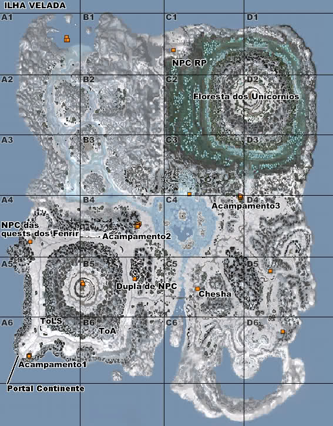
[GUIA] QUESTS em ILHA VELADA (Lvl 130+)
(ALGUMAS QUEST NÃO ESTÃO DESCRITAS AQUI, QUESTS DE SIMPLESMENTE FALAR COM O NPC DO LADO)
Acampamento no portal vindo da estrada de Palmir Plato:
obs. Todas essas quests são perto dos npcs (ToLS),
exceto a do Urso maior que é meio caminho para o Leste(ToA) ou Norte sentido o outro NPC de Quest.
Zona no mapa: A6 (ACAMPAMENTO 1)
Quest 1: Matar Lobo Branco (drop de item) [A6]
Quest 2: pegar documentos no chão [A6]
Quest 3: Matar mais do mesmo lobo (drop de item) [A6]
Quest 4: Matar Urso (drop de item) [A6]
Quest 5: Matar do Urso maior. [B6 ou A5]
NPC ao Norte de primeira vila:
Zona no mapa: A4 (NPC das Quests dos Fenrir)
Quest 1: Matar Fenrir [A6 ou A5]
Quest 2: Coletar madeira do chão. [A4]
Quest 3: Matar Fenrir Mini Boss [A4]
Quest 4: Matar Fenrir Mini Boss Denovo. [A4]
(Fenrir Miniboss[**] está um pouco mais ao norte do NPC no canto da montanha,
descendo o barranco nevado de onde o npc se encontra.)
Dupla de NPC ao Norte da entrada de ToA(Templo dos Anciões)
Zona no mapa: B5 (DUPLA DE NPC)
Quest 1: Coletar Tecidos Uteis, Mate as Anatemas a leste do npc. [C5]
Quest 2: Coletar cogumelos e matar urso garra cortada para dropar as carnes. também ao leste do npc. [C5]
obs. o outro npc da a quest do Barikan, que é o Inicio para a Chain quest da Ice Maiden,
veja na parte mais abaixo desse tutorial..
Quest Acampamento2:
Zona no mapa: B4 (ACAMPAMENTO 2)
Quest1: Matar nanani's (são mobs que pareçem Abelhas) elas são range de lvl 168+ (Pegar os drops "saliva e Asas") [A2, B2]
(Os Nanani's ficam sentido Norte depois Noroeste do NPC, subindo a montanha de neve)
obs. Cuidado que o caminho é traicoeiro: estreito e cheio de mob.
Zona no mapa: Entre A2, B2, A3(norte), B3(norte)
Quest2: Coletar Ovos de Nanani nos ninhos de nanani, na mesma região anterior [A2, B2]
Quests da Floresta dos Unicornios:
(Chain 1: que começa na estrada de Plato Palmir)
Quest1:
- Começa no NPC que fica do lado de fora do portal pra Ilha velada.
(Oeste da entrada de plato Palmir.)
Pegar um item com o Criador Mars em Rondo, e entregar no mesmo npc.
Quest2:
- Achar uma RP (npc) no vale dos unicornios, o vale dos unicornios eh no extremo norte / NORDESTE da ilha velada.
(cuidado, as mobs pra chegar la são 170+)
A RP é um NPC, portando vc vai ver ela no mapa, ela fica na região NOROESTE DA Floresta dos unicornios. [C1]
Quest3:
- Achar escama de Peixe, é um item q se coleta extremo sul da parte Leste da ilha
velada, no posto dos mardukas, extremamente perto do DRAKA
referencia: http://img96.imageshack.us/f/drakaeescamadepeixe.jpg/ [C6, D6]
Quest4:
- Coletar item de uma planta que pareçe um Abajur tipo um caule com uma Bola amarela em cima. [C2]
Quest5:
- Matar o miniboss Unicornio e o miniboss Pesadelo na floresta. [C2]
Quest6:
- Retornar a quest para miriel
(Chain 2: Que começa com o npc humano bem na primeira zona adentrando a floresta dos unicornios) [C3]
Quest1:
- Matar Unicornios (dos grandes) pra pegar Item drop (lagrimas de unicornio) [C2]
Quest2:
- Coletar 2 plantas que tem pela região da floresta dos unicornios. [C2, C3]
Quest3:
- pegar o oculos/planta de ketchikan:
para completar essa quest voce precisa completar fazendo a quest da Piranha dourada no final do ninho das Nananis.
(continuação ainda desconhecida)
QUEST da ICE MAIDEN
(começa no NPC ao norte da entrada de ToA (Templo dos Anciões) [Dupla de NPC]
nome das quests estão de acordo com um pequeno guia em ingles que eu achei,
tentei traduzir e adicionar coisas por experiencia propria ja que estou nessas
quests e adicionando a Referencia do Mapa da ilha com a grade de localização que eu criei.
Quest1: "The big bad catman"
- Matar o Barikan (Sul do NPC da quest, spawna a cada hora no meio da pequena vila de Marduka) [B5 quase C5 bem na parte de baixo]
Quest2: Commander Alphonse
- No acampamento norte do inicio da Quest (onde tem varios NPCs) [B4]
Quest3: Hungry Hungry Nakibu
- Pegar peixe "fundição" dos buracos no gelo. (entrega no mesmo npc) [C4]
Quest4: Snowy White Doves
- Pegar pena das Penugem Luminosas (passaro branco) (entrega no mesmo npc) [B4, B3]
Quest5: Wolves to the North West
- pegar garra dos passaros azuis ou lobos (eu fiz só com os passaros) (entrega no mesmo npc) [B4, C4]
Quest6: Yetis to the East
- 10 Yetis Gigantes (entrega no mesmo npc) [C4]
Quest7: "Fetch, Boy!"
- Pegar o bau ao norte do npc da quest, está do lado de uma pequena tenda, ao sul / suldeste do principal posto dos mardukas no ninho dos Nananis.
(norte depois Noroeste subindo o morro de neve) (entrega no mesmo npc) [B3]
Quest8: "Chief Explorer Kane"
- Kaine fica pro Nordeste do NPC (do outro lado do lago congelado em diagonal) [Acampamento 3]
Quest9: "Explorer Chesha"
- Chesha fica pro Sul do NPC da quest Perto da Ponte perto do Barikan mas ao lado Leste da ponte. [C5]
Quest10: "Mining for Information"
- Coletar fragmentos de Minerio, tem uma pedra logo ao sul do Chesha. [C5]
Quest11:
- Entrega no NPC Kaine (Acampamento 3) e depois no acampamento2 (duas vezes no segundo)
Quest12: "Living Minerals"
- Coletar os Minerais de um Cogumelo Azul. (perto dos yetis / lobos azuis) a Norte Noroeste do Chesha.
[C4] Img: http://img850.imageshack.us/i/rappelzscreen00000007x.jpg/
Quest13: "Love is a battle field"
- Matar Kruzin (aparentemente serve o terujin) na torre de Madeira. (pegar pedaço do coração)
Localização:http://img705.imageshack.us/f/kruzin.jpg/
Quest14: "The Final Piece"
- Matar o Terujin. (pegar pedaço do coração) proximo ao outro miniboss da quest anterior.
Quests em Ilha Velada
Quest15: "Kill Draka"
- No ponto mais ao sul do posto de Mardukas na ilha velada.
referencia:http://img96.imageshack.us/f/drakaeescamadepeixe.jpg/
Quest16: Depois matar os outros bosses de Ilha Velada:
ToA - Traição
17:
TOLS - Ashmaw
18:
TOE - Lord Kinysh
19:
Ninho do dragão - Obsidikan
20:
4 oforias do Gelo (não sei exatamente como é, mas aparentemente na quest vc ativa eles em ums cristais grandes que tem na ilha velada)
21:
Ultimate Icequeen (NAO SEI)
Recompensa: ICE MAIDEN (pet t4 já TAMADO!)
Rappelz -Parte 3-
Guia da Quest Bruxa Rappelz
1.Quest: Reunião da Oracle
Fale com o Guild Resha Oficial no Rondo.
Selecione a seguir na ordem da converstaion:
"Onde posso encontrar a menina de cabelos vermelhos?"
em seguida,
"Será que ela realmente vê o futuro?"
e, finalmente,
"Sim, eu quero conhecê-la".
Você será dado então a busca para encontrar a garota de cabelos vermelhos em fazenda vermelha.
Na fazenda vermelha, a oeste de rondó, fale com o NPC Red-Haired Girl Luci.
Isto completa a primeira missão.
2.Quest: Um deleite para Reinke
Fale com Fenrir Reinke, busca selecionar "Um deleite para Reinke".
Vá matar tortus ao redor da área para obter carne de sete (7) tortus.
Uma vez feito isso, clique em Reinke, busca selecionar para concluí-lo em seguida, falar com ele novamente.
Selecione "Give Treat" e depois "Remova a lâmina", em seguida, falar com Luci novamente, desta vez ela vai ter a opção de "remover a lâmina".
Você terá que falar com ela novamente e selecione "Você é a garota de cabelos vermelhos".
Observe o diálogo mudou. Clique em ...(line truncated)...
Nota: busca Reinke não será apagada, não importa quantas vezes você completá-lo.
Essa busca está grampeada, depois de receber a próxima missão de Luci, você terá nada a ver com este cão nunca mais.
Simplesmente ignorar o ponteiro amarelo brilhante em sua cabeça.
Graças a ferver thelunarsorcerer ** / por me lembrar desta **
3. Julgamento Elohim: Quest Pernas Fortes
Esta é uma quest cronometrada, tudo que você precisa fazer é colher 3 (três) dessas rochas flutuantes azul em torno da fazenda Espírito vermelha chamada de Pedra do Sereno.
Então fale com Luci novamente para reivindicar essa busca e ativar a próxima.
Recompensa: Escolha de r3 Luvas
4. Quest: História da Terra: Prelúdio de Sangue
Uma vez ativado, ele será automaticamente porta que você Charmer Jeina no site Pyre.
Basta falar com ela para completar a missão e ser teleportado de volta para Luci.
Fale com Luci novamente para próxima quest.
5. Julgamento Elohim: Quest Cold Eyes
Para esta missão, se você vai notar que há duas streaming luzes na frente do celeiro Luci's.
Você tem que ir em seqüência para cada portal para chegar ao destino final que é Woods Fada.
Toda vez que você pegar o portal errado, você será mandado de volta para Luci, daí você vai começar de novo.
Eu realmente enganado em um presente e foi direto para a madeira de fadas, mas não vai funcionar mesmo se você é capaz de colher o colar.
Você precisa atravessar os portais, aqui é a seqüência que funcionou para mim e...(line truncated)...
Recompensa: Escolha de r3 botas
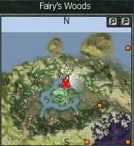
6. Quest: História da Terra: Witch Hunt
Uma vez ativado, ele será automaticamente porta que você Desert Keeper Eleno Ceriu no Deserto.
Basta falar com ele para completar a missão e ser teleportado de volta para Luci.
Fale com Luci novamente para próxima quest.
7. Julgamento Elohim: Quest Espírito lúcido
Tudo que você precisa fazer para isso é de matar 14 Fadas Lucid encontrado em torno da fazenda vermelha, mas esta é uma quest cronometrada de 10 minutos.
Ao terminá-lo, falar com Lúcia novamente.
Recompensa: Rare r3 brincos
8. Quest: História da Terra: Fanáticos
Uma vez ativado, ele será automaticamente porta que você Elohim Siahpe da Costa.
Basta falar com ele para completar a missão e ser teleportado de volta para Luci.
Fale com Luci novamente para próxima quest.
[B] 9. Julgamento Elohim: Quest Coração Stout
Para este, você terá que matar oito (8) Fanatic Emboscada encontradas a oeste da fazenda vermelha.
Veja a imagem abaixo.
Recompensa: Wolf Cartão Vazio
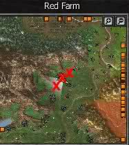
10. Assassin Fanático: Quest Fazenda Vermelha
Matar dois Comandante Fanatic Emboscada Emboscada e 12 Fanatic.
Depois de completar esta missão, Luci vai em coma. mesmo local como o último
Recompensa: anéis R3
Nota: Para # 11,12 e 13: ativar todos os três ao mesmo tempo busca uma vez que alguns dos mobs sobreposição,
portanto, você só precisa matar os fanáticos uma vez ao invés de fazê-lo três vezes
11. Quest: Assassin Fanático: Laksy
Você precisará agora ir para oficial da guild de cada cidade para continuar com a busca, você pode fazer isso em qualquer ordem.
Em Laksy, matar um fanático Subjugação Comandante e dois Fanatic Subjugator.
Veja a imagem abaixo.
Recompensa: raros brincos r4
Image
12. Assassin Fanático:: Quest Katan
Em Katan, matar um fanático Subjugação Comandante e dois Fanatic Subjugator. Veja a imagem abaixo.
Recompensa: luvas de R4
Image
13. Assassin Fanático:: Quest Horizonte
Em Horizonte, matar um fanático Subjugação Comandante e dois Fanatic Subjugator. Veja a imagem abaixo.
Recompensa: r4 botas
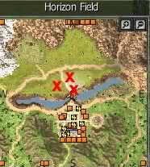
14. Assassin Fanático:: Quest Rondo
Quando você é feito com as três cidades.
Você vai precisar de cabeça para Rondo e falar para o Grêmio Oficial Resha para obter próxima quest.
Mais uma vez, matando cerca de emboscada foram encontrados mais ao norte, sul e leste de portões rondó.
Imagem abaixo mostra apenas onde eu encontrei a emboscada a sul de Rondo.
Depois de concluído voltar para Resha e será em seguida, pedir para ir para sede dos Templários.
Recompensa: anéis R4
Image
15. Quest: Posse Comandante
Na sede dos Templários, falar com o Papa Luciano Luz para completar a missão.
Recompensa: Novo R4 Armaduras (Seqüência: Warrior, Hunter, Mage Summoner)
16. Quest: Bansky Instrutor
Fale com o Papa Luciano novamente e você terá que falar com o Instrutor de Bansky.
Mais uma vez, você será teletransportado automaticamente.
17. Quest: Traces of the Witch: Ruínas Sirag
Instrutor Bansky vai agora dar-lhe a próxima quest.
Você terá que matar alguns mobs, eu esqueci o nome.
Mas eles desovam no meio das ruínas, onde há uma cruz.
Depois de concluído, fale com o Bansky novamente para próxima quest.
Recompensa: R5 Luvas
18. Quest: Walker Heingel Instrutor
Você será automaticamente teleportado para aqui depois de ativar a busca de Bansky.
Basta falar com Insturctor Heingel Walker para completar este.
19. Quest: Traces of the Witch: terreno de ensaio Magic
Fale com Heingel para ativar quest. Você terá que matar alguns mais fanáticos.
Veja a imagem abaixo. Complete então fale com Heingel para próxima quest.
Recompensa: botas R5
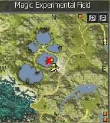
Nota: No ponto 19, a localização no mapa é certo, mas os fanáticos são poucos spawn lento,
e arent suficiente para a busca, se você encontrá-los, eu esperei 5 minutos, sem respawns.
Depois de muito tempo pesquisando na piscina grande, (mais a sul), tem muito mais deles,
especialmente se você for fundo nele, o exército de fanáticos lá.
Você pode também salientar que, ou adicionar um mercado na foto;
(guia btw muito bom, me ajudou muito, essa é apenas uma sugestão para ajudar).
20. Quest: A Ressurreição da Bruxa
Tempo para matar o primeiro chefe de linha-de-bruxa busca.
Gostaria de recomendar à procura de um partido para ajudá-lo a matar o chefe.
Veja a imagem para ver onde ela gera.
Complete a quest e falar com Heingel novamente.
Image
21. Quest: Relato Ressurreição da Bruxa
Depois de matar a bruxa e falar com Heingel,
você vai precisar de voltar à Luz Papa Lucian para continuar a história e terminar esta quest.
22. Quest: Declarar guerra contra os Fanáticos
Luz Papa Lucian pedir-lhe para falar com o comandante da Força Subjugação Fenant na torre de marfim.
Mais uma vez, você será teletransportado automaticamente.
23. Quest: Subjugar o Fanáticos Torre de Marfim
Tempo para matar alguns mais fanáticos.
Há dois conjuntos de multidão que você terá que matar, veja a imagem para saber onde eles estão.
Recompensa: brincos Raros R5
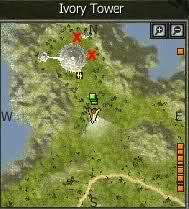
24. Missão: Apoiar o Assassin Guild
Após a conclusão da última missão, você será, em seguida, pedir para falar com Subjugação Comandante da Força Richard,
encontrado na entrada dos Assassinos Katan's Guild.
Você será transferido automaticamente.
25. Quest: Subjugar o Assassin Fanáticos Guild
Comandante da Força Richard vai lhe pedir para matar alguns mais fanáticos.
Basta ir dentro da Guilda dos Assassinos e você vai vê-los imediatamente ao seu lado esquerdo.
Recompensa: anéis R5
26. Quest: Relatório da subjugação dos Fanáticos Assassin Guild.
Depois de ter completado busca comandante Richard,
ele vai pedir para você voltar para a Luz Papa Lucian na sede dos Templários para denunciá-lo.
27. Quest: Hector Summoning
Você será automaticamente enviado para Pyre Site.
Você terá que matar o chefe da segunda linha de busca.
Olhe para o herói Hector (**), novamente uma festa seria grande sobre isso.
Depois de ter morto Heitor cabeça, de volta para o Papa para completar a missão.
Desta vez você não vai ser portado.
Recompensa: Vazio Normal Card (Tier 4) Raros
28. Quest: Apoio a caça às bruxas
Depois de reivindicar a sua última missão.
Fale com o Papa Lucian novamente.
Ele irá automaticamente porta-lhe herói Hector no Altar Dead Espírito.
Fale com Hector para completar a missão.
29. Quest: Witch Hunt
Finalmente, após longa viagem que você começa a matar a Bruxa Ultimate.
A festa seria melhor para isso que ela tem toneladas de hp e intimação.
Assim que você matá-la, volte para a Hector para reivindicar seu prêmio.
Recompensa: novas armaduras R5 (Warrior, Hunter, Mage, em seguida, Summoner), toneladas de EXP, JP e Pontos Gen.
Quest Vulcanus 30+
Requisitos:
Nível 30 ou superior
Cerca de 10 milhões de rúpias no valor de almas Vulcanus:
200+ Souls minúsculos
250+ Dark Souls
100+ Grandes Almas
Almas de 30+ Demônios
Mais almas se deseja continuar a fazer uso de masmorra Vulcanus.
Notas:
Completando todas as quests você ganhará 8 pots de stamina
e desbloqueia o título "Vulcanus Slayer"
É sugerido fazer a quest no nível 115-116
por causa da falta de uma DG para esse nível.
DG Vulcanus
O covil de Vulcano é uma masmorra única que pode ser acessado no nível 30 ou superior,
mas só pode ser inserido sozinho.
Para participar, você deve coletar Vulcanus Souls e levá-los a um Santuário de Vulcano,
onde você pode usá-los para entrar em sua prisão fundido.
Uma vez dentro, você tem de enfrentar ondas de asseclas de fogo de Vulcanus, em seguida,
descer ainda mais na prisão com Souls mais presos.
Só depois de derrotar todos os asseclas de Vulcanus você irá enfrentar o próprio Vulcanus.
Santuários de Vulcanus estão espalhados por todo o mundo Rappelzian!
Para inserir esses santuários, você vai precisar para oferecer o altar algumas almas Vulcanus.
Estas almas são vendidos por Noblewomen em cada cidade para um pequeno preço.
Existem 4 tipos diferentes de almas, cada um na sua 'onda' no calabouço Vulcano.
Para a primeira vaga na masmorra Vulcanus, você precisa oferecer 20 almas minúsculos.
Para a segunda vaga na masmorra Vulcanus, você precisa oferecer 10 almas escuras.
Para a terceira onda na masmorra Vulcanus, você precisa oferecer 5 almas grandes.
Para a última onda na masmorra Vulcanus, você precisa oferecer alma 1 do demônio.
Ao entrar covil Vulcanus ', você vai encontrar-se em uma pequena masmorra preenchido com 6 monstros.
Esses monstros será dimensionada para o seu nível de gama. Cada faixa de nível de 10 níveis, sendo * 0 * 9.
Nível 30-39, 40-49, 50-59, etc,
Os minions em Vulcanus que variam de nível 3 * 10 * masmorras são mais fortes do que monstros masmorra de nível semelhante,
por isso tome cuidado quando visitar calabouço Vulcanus 'nesses níveis.
O lado positivo de visitar calabouço Vulcanus 'durante estes níveis é que os asseclas não são agressivos, para que você possa levá-los em uma lentamente por 1
Alguns dos jogadores mais experientes e mais fortes pode parecer isso como uma coisa negativa.
Os monstros no calabouço Vulcanus para o nível de 11 * e superior são agressivos, mas mais fraco do que monstros nível de masmorra semelhantes.
Para enfrentar Vulcanus na onda final, você tem de enfrentar, pelo menos, um de cada onda de seus asseclas primeiro.
Quando você tiver matado todos os 6 monstros em um piso Vulcanus, um portal vermelho aparecerá, dando-lhe 3 opções para escolher.
A primeira opção irá permitir que você faça a mesma onda, mais uma vez, este é para as pessoas que caçam monstros de missões, ou pessoas que têm o problema de frente para as ondas mais altas.
Há um limite para a quantidade de vezes que você pode repetir a mesma onda,
então você pode optar por continuar para a próxima onda com a segunda opção, ou deixar o calabouço através do portal roxo.
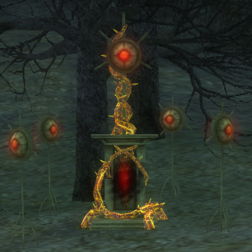
Alguns conselhos pessoais
A partir da experiência pessoal, eu gostaria de sugerir à espera com a realização de todas as missões Vulcanus até que você esteja em torno de nível 115.
Isso porque não existem masmorras disponível para nível 114-120, e você vai precisar para concluir um 'run Vulcanus full', muitas vezes,
concedendo-lhe uma grande quantidade de XP e você ficar perto de 120+.
Estas missões também recompensá-lo com 8 poupadores stamina untradable, e que está longe de ser uma má recompensa!
Há muito o lote A santuários Vulcanus colocados no mundo Rappelz.
Eles são marcados em seu mapa com um símbolo.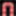
Há alguns que eu mesmo prefiro, porque eles são ou perto de Rondo (Onde você obtém todas as missões de) ou perto de um lugar que você pode se teleportar para.
São Estes:
Palmir Plateau (Você pode se teletransportar para este lugar com o teletransporte Palmir Plateau de Rondo) 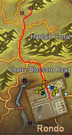
Mourning Graveyard (Você pode se teletransportar quase em cima do altar com o teletransporte de lamentação do cemitério de Katan ou Hidden Village) 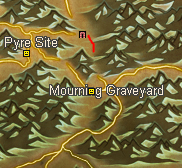
Marduka Waterfall (Você pode se teletransportar perto este lugar com o Cachoeira teletransporte de City of Ruins) 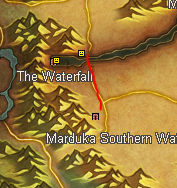
Wolha Cemetery (Você pode se teletransportar perto este lugar com o teletransporte Wolha Cemitério da Horizon ou Hidden Village) 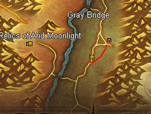
Chega de enrolação e vamos a Quest Vulcanus
Você vai começar e terminar toda a quest e buscas deste tuto, no mesmo NPC: membros da União Colvin em pé no centro de Rondo.
Muitas vezes você poderá levar 2 ou 3 missões ao mesmo tempo, sugere-se que você complete 1 ou todas as 3 antes de voltar ao membro da União Colvin em Rondo.
1 - Investigate the new gate (Investigue o novo portão)
Objetivo:
Dê um duplo clique em um portão Vulcanus, não há necessidade de abri-lo.
Verifique se você não está em uma PT quando você fizer isso.
2 - Dungeon Exploration (Explorando a DG)
Objetivo:
Coletar 1 Artifact of the Ancients (Artefato dos Anciões) dos minions no calabouço Vulcanus
Recompensa :
Vulcanus souls (Almas de Vulcanus)
3 - Secrets of birth (Segredos do nascimento)
Objetivo:
Recolha 20 ovos dos monstros minions no calabouço Vulcanus
Recompensa :
1 stamina saver (protetor de resistência) (Não Trocavél)
4 - Ancient Legacy (Legado antigo)
Objetivo:
Colete 3 Pieces of Vulcanus Journal (Peças Jornal de Vulcanus) dos minions em Vulcanus calabouço
Recompensa :
Vulcanus souls (Almas de Vulcanus)
5 - The Cursed Tree (A árvore Cursed)
Objetivo:
Coletar 20 Partes da pele Cursed Árvore dos minions no calabouço Vulcanus
Recompensa :
1 stamina saver (protetor de resistência) (Não Trocavél)
6 - Secrets of Birth ? Collect Experimental Material (Segredos de nascimento? Coletar material experimental)
Objetivo:
Recolha de ovo 20 dos monstros minions no calabouço Vulcanus
Recompensa :
Relic box (Caixa Relíquia)
7 - Key of Vulcanus (Chave de Vulcanus)
Objetivo:
Colete 3 pieces de Vulcanus 'Chave dos minions em Vulcanus' calabouço
Recompensa :
Vulcanus souls (Almas de Vulcanus)
8 - The Cursed Tree? Collect Experimental Material (A árvore Cursed? Coletar material experimental)
Objetivo:
Coletar 20 Partes da pele Cursed Árvore dos minions no calabouço Vulcanus
Recompensa :
Relic box (Caixa Relíquia)
9 - Ancient Traces (Vestígios antigos)
Objetivo:
Coletar 20 (Slabs of the Ancient) Placas do antigo calabouço de minions em Vulcanus
Recompensa :
1 stamina saver (protetor de resistência) (Não Trocavél)
10 - Box of Honesty (Caixa da Honestidade)
Objetivo:
Colete o Coração de Vulcanus do próprio Vulcanis
Recompensa :
Nenhuma
11 - Ancient Traces? (Vestígios antigos?) Coletar dados
Objetivo:
Coletar 20 Placas do antigo calabouço de minions em Vulcanus
Recompensa :
Relic box (Caixa Relíquia)
12 - Source of Life (Fonte da Vida)
Objetivo:
Coletar
1 Antigo Cristal de Luz,
1 Antigo Cristal de escuridão,
1 Antiga Pedra que contem uma magia elemental do próprio Vulcanus
Recompensa :
2 stamina saver (protetor de resistência) (Não Trocavél)
13 - Preparing For The Future (Preparar o futuro)
Objetivo:
Fale com o Diretor de Comércio Mirune em Rondo
Recompensa :
3 stamina saver (protetor de resistência) (Não Trocavél)
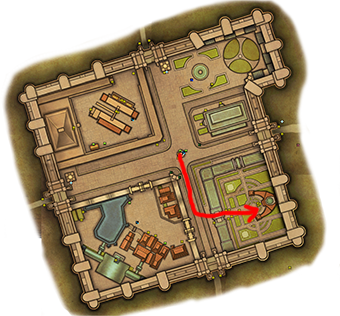
13 - Source of Life (Fonte da Vida)
Objetivo:
Coletar
1 Antigo Cristal de Luz,
1 Antigo Cristal de escuridão,
1 Antiga Pedra que contem uma magia elemental do próprio Vulcanus
Recompensa :
Relic box (Caixa Relíquia)
Quest Boss Ross 50+
Requisitos:
Nível 50 ou superior
Notas:
Ao final da Busca sua recompensa é uma poção de crescimento não trocavél.
Passo a passo em vídeo (3 partes)
Em breve...
Mapa da área da quest
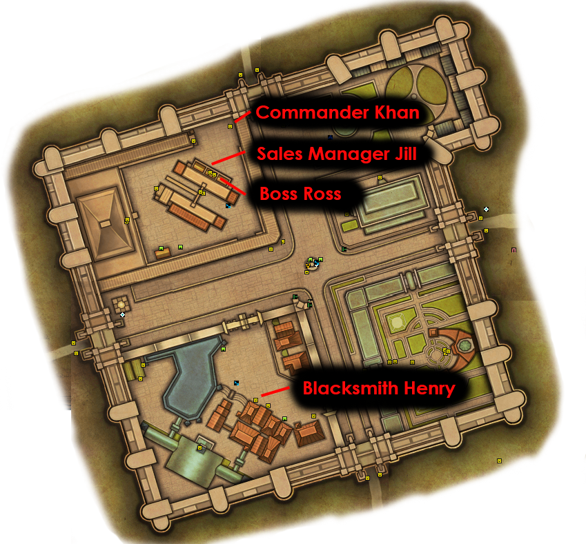
Texto e imagens do passo a passo
1 - Estás despedido!
Início:
Chefe Ross
Objectivo:
Fale com o ferreiro Henry
Completo:
Ferreiro Henry
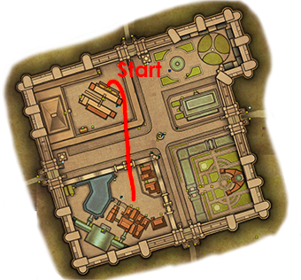
2 - Lembrete amigável
Início:
Ferreiro Henry
Objectivo:
Fale com o chefe Ross
Completo:
chefe Ross
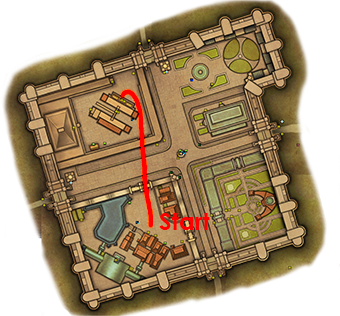
3 - Ordem de Serviço
Início:
chefe Ross
Objectivo:
Fale com o ferreiro Henry
Completo:
ferreiro Henry
4 - Shell Shocked
Início:
ferreiro Henry
Objectivo:
Colete 10 Shell Fragments das tartarugas localizadas ao norte de rondo